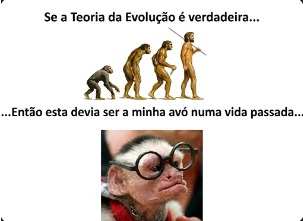
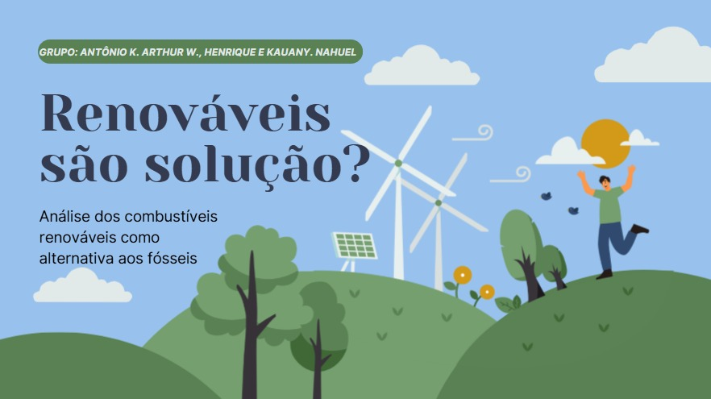
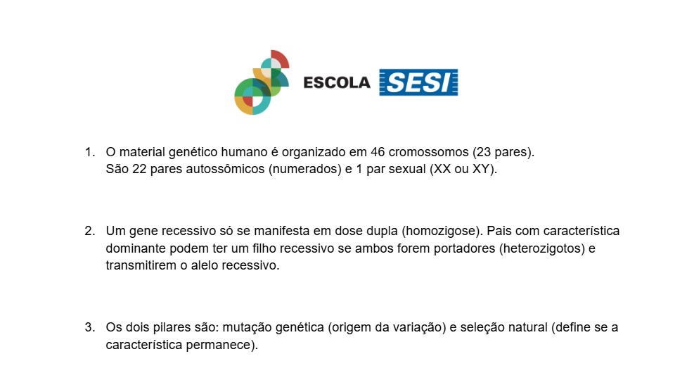

Exploramos as ideias evolucionistas e seus principais cientistas, analisando evidências biológicas e conceitos fundamentais da área. A aula integrou teoria e prática através de um simulador de seleção natural, unindo o rigor científico à criatividade na elaboração de memes temáticos. O aprendizado foi consolidado com a entrega de um relatório detalhado e atividades na plataforma Geekie.
C3 - Determinar os impactos das ações humanas nos ambientes, identificando suas causas e propondo soluções para a sua redução.
H15 - Comparar propostas de intervenção ambiental aplicando conhecimentos científicos e tecnológicos, observando os riscos e benefícios de sua implementação.
H18 - Identificar situações de risco ambiental na cidade onde reside.

Nesta semana, aplicamos os conceitos científicos das aulas anteriores nas apresentações sobre o problema dos combustíveis. O foco foi transformar a teoria em argumentação crítica, utilizando dados reais e exemplos práticos para defender um posicionamento em até 10 minutos. O objetivo foi demonstrar domínio técnico, clareza na comunicação e uma visão profunda sobre os impactos e soluções para a matriz energética atual.
C1 - Entender a ciência e a tecnologia como construções humanas
C2 - Aplicar conceitos científicos para explicar fenômenos do cotidiano
H9 - Compreender energia e suas transformações
H11 - Investigar, levantar hipóteses e tirar conclusões
H1 - Interpretar diferentes formas de informação (textos, gráficos, dados)

Nesta aula, o foco foi a autonomia e a fixação de conteúdo através da resolução do estudo dirigido. Com base nos dois vídeos assistidos, dediquei o tempo para responder às perguntas da atividade, conectando as explicações audiovisuais aos conceitos científicos discutidos anteriormente. Essa etapa foi essencial para organizar o raciocínio e garantir o embasamento teórico necessário para a compreensão do problema dos combustíveis.
C1 - Compreender as ciências naturais e as tecnologias como construções humanas associadas à cultura dos povos e suas visões de mundo.
H1 - Interpretar informações apresentadas em diferentes linguagens usadas nas Ciências, como texto discursivo, gráficos, tabelas, relações matemáticas, diagramas ou representação simbólica.